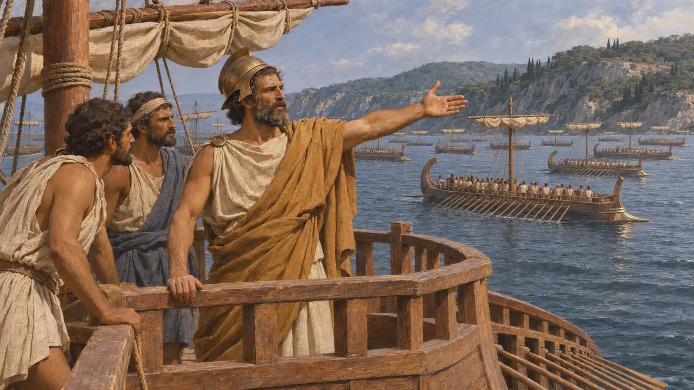
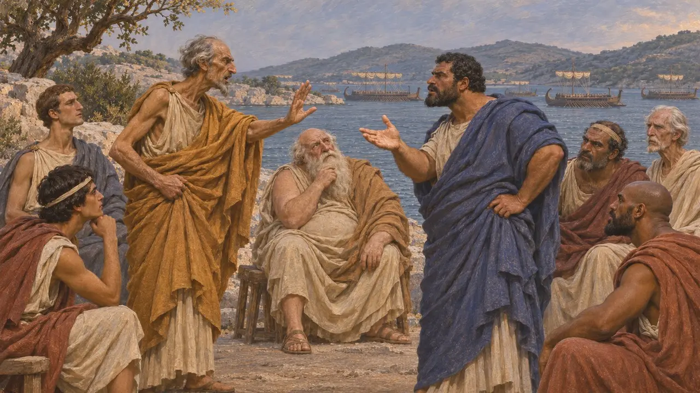
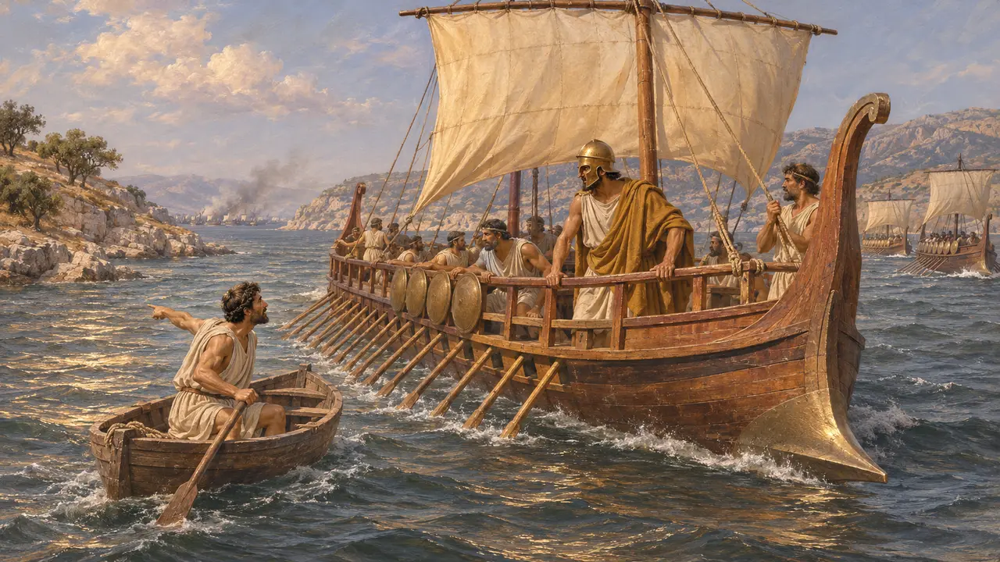
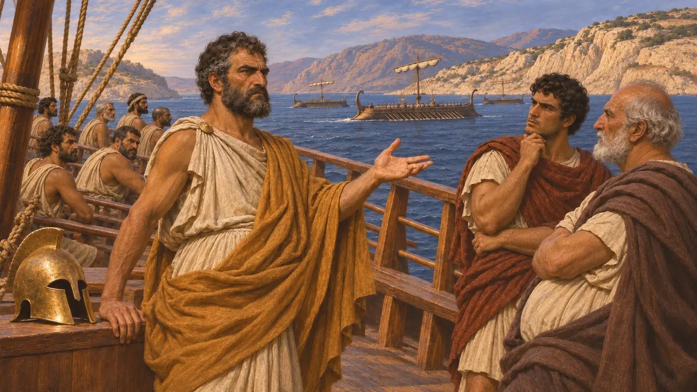

Adimante de Corinthe
Commandant naval corinthien à l'Artémision et à Salamine, 480 av. J.-C.
Adimante, fils d'Ocytos, commandait les navires corinthiens de la flotte grecque en 480. Hérodote le montre comme un adversaire acharné de Thémistocle lors des débats précédant Salamine. Hérodote rapporte aussi une version athénienne selon laquelle il aurait fui pendant la bataille, et dit que les Corinthiens et le reste de la Grèce la niaient.
Dans le jeu : Adimante n'est nommé que dans les articles d'événements sur l'Artémision et Salamine et n'a aucune mécanique propre. Le jeu mentionne l'accusation athénienne selon laquelle il aurait fui ; Hérodote dit que les Corinthiens et d'autres Grecs la niaient.

Commandant corinthien de la flotte grecque
Récit antiqueHérodote désigne Adimante, fils d'Ocytos, comme le chef du contingent corinthien dans la flotte grecque de 480. Corinthe envoya à la flotte alliée placée sous les ordres du Spartiate Eurybiade une escadre importante, que l'historien énumère dans son catalogue de la flotte. À l'Artémision, il raconte que Thémistocle corrompit Adimante, entre autres, pour qu'il reste et combatte, un récit qui reflète les sources athéniennes.
Herodotus 8.5

Querelle avec Thémistocle
Récit antiqueSelon le récit d'Hérodote, Adimante s'opposa à Thémistocle au conseil qui précéda Salamine. Il pressait un repli vers l'isthme de Corinthe et déclara à Thémistocle que ceux qui partent trop tôt dans une course sont battus de verges. Thémistocle aurait répondu que ceux qui restent en arrière ne sont pas couronnés. Cet échange est rapporté par Hérodote, et ses termes exacts ne peuvent être vérifiés.
Herodotus 8.59

La charge de la fuite
ContestéHérodote rapporte que les Athéniens racontaient qu'Adimante, pris de panique, avait hissé la voile dès le début de la bataille et pris la fuite avec les navires corinthiens. Selon ce récit, une barque les rejoignit avec la nouvelle que les Grecs l'emportaient, et ils firent demi-tour trop tard pour combattre. Hérodote ajoute que les Corinthiens démentaient cette version et que le reste de la Grèce parlait d'eux en bien. Les sources sont donc en désaccord, et l'accusation doit probablement quelque chose à l'hostilité des Athéniens envers Corinthe.
Herodotus 8.94

Plutarque et le débat ultérieur
Récit antiquePlutarque, écrivant plusieurs siècles plus tard, accusa Hérodote d'injustice envers Corinthe dans son traitement de Salamine et des Corinthiens en général. La querelle sur la conduite d'Adimante se prolongea donc bien après 480. Aucune source perse ne mentionne Adimante.
Plutarch, On the Malice of Herodotus
Sources
- Herodotus 8.5
- Herodotus 8.59
- Herodotus 8.94
- Plutarch, On the Malice of Herodotus
- P. Green, The Greco-Persian Wars, 1996